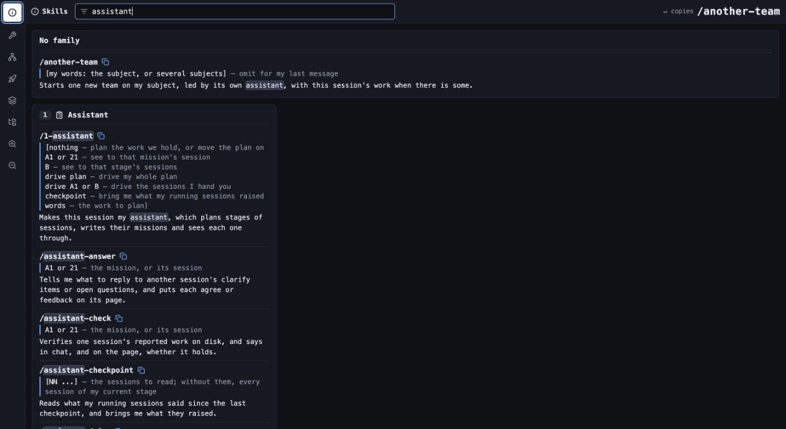
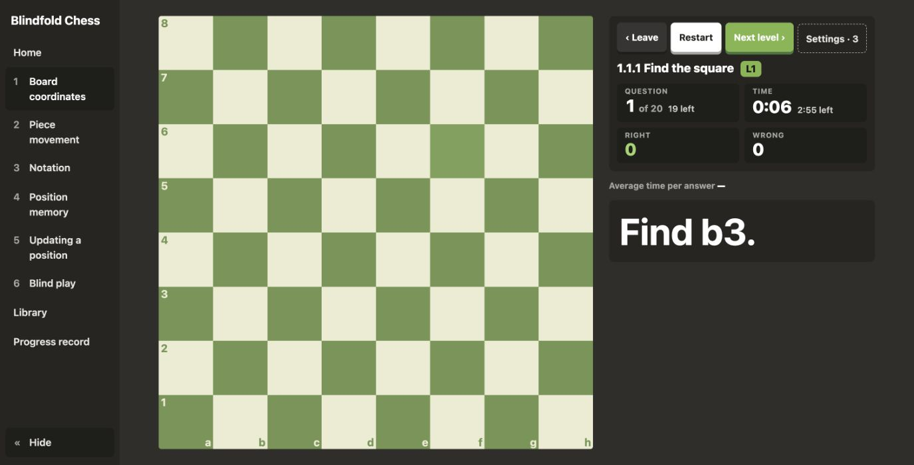

01Rules
Communication and reasoning are explicit.
Short answers. Concrete examples. Decisions I can inspect.
Rules for clear thinking.Workflows for coordinated sessions.A local dashboard for the decisions that stay mine.
macOS · iTerm2 · Claude Code · Python

I describe what I want.
Sessions surface choices and prototype variations.
I review proposals and give clear rulings.
Missions, checks, and handovers preserve the direction.
The working method lives alongside the implementation.
I can inspect it, adapt it, and keep refining it.
Short answers. Concrete examples. Decisions I can inspect.
Assistants coordinate missions. Clarify tools capture rulings.
Prototypes make interface choices visible.
Python tools bring pages, sessions, and handovers together.
The dashboard runs on my machine.

A trainer built around how I want to practice.
Its six chapters build toward blind play.
Practice covers coordinates, movement, notation, memory, and position updates.
The full environment uses macOS, iTerm2, and Claude Code.
Try it in a disposable project and review its permissions.
This public page presents the project. Its dashboard runs locally.